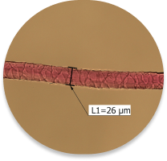

Info o projektu

Projekt zaměřený na ty, které nebaví záplava nekvalitního textilu. Chtějí najít kvalitní oblečení a vědět, jak se o něj správě starat.
Skrze několik otázek zjistíme, co zákazník hledá, ukážeme mu tu nejlepší volbu a seznámíme ho i s ostatními materiály.